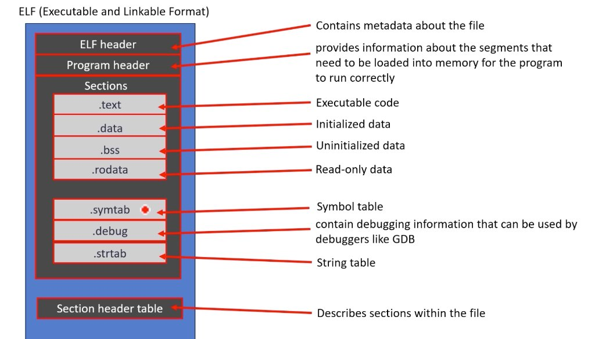

Module 2: Compilation and Build Process
A professional systems or firmware engineer never treats the C compiler as a black box. Understanding how source code translates into machine instructions across Preprocessing, Compilation, Assembly, and Linking is the fundamental prerequisite to diagnosing linker collisions, undefined symbols, stack sizing, memory map segment placement, and binary optimization.
2.1 The Four Stages of the C Compilation Pipeline
When you invoke gcc main.c -o app, the GCC command driver does not perform a single atomic conversion. It acts as a supervisor, invoking four discrete tools sequentially:
main.c → cpp (C Preprocessor) → main.i (Pure expanded C text)
main.i → cc1 (Compiler proper) → main.s (Target Assembly code)
main.s → as (GNU Assembler) → main.o (Relocatable ELF object)
main.o + lib*.a / .so → ld (Linker) → app (Executable ELF / .bin)
2.2 Deep Dive: Preprocessing Stage (cpp)
The preprocessor is a text-substitution engine that operates on source code before lexical and semantic syntax analysis. It performs three critical operations:
- Header Expansion (
#include): Recursively replaces the#include <header.h>directive with the entire verbatim contents of that header file. - Macro Expansion (
#define): Replaces symbolic macros and function-like macros with their definition. - Conditional Compilation: Evaluates
#ifdef,#ifndef,#if defined(), stripping out inactive source blocks. - Comment Stripping: Strips both single-line
//and block/* ... */comments, replacing them with whitespace.
gcc -E main.c -o main.i
Inspecting main.i is the quickest way to resolve macro substitution bugs, header guard failures, and unexpected typedef overrides.
2.3 Compilation to Target Assembly (cc1)
The compiler takes pure C code (without directives or comments) and parses it into an Abstract Syntax Tree (AST). It performs semantic verification, type checking, register allocation, dead-code elimination, and loop unrolling based on the optimization level (-O0, -O2, -Os), finally producing assembly language instructions specific to the target CPU architecture (x86_64, ARM Cortex-M, RISC-V).
# Stop compilation after generating assembly code:
gcc -S -O2 main.c -o main.s2.4 Assembling to Relocatable ELF Objects (as)
The assembler translates human-readable assembly instructions into raw binary machine code, packaging them inside an Executable and Linkable Format (ELF) object file.
# Stop after assembling into an unlinked relocatable object file:
gcc -c main.c -o main.o
At this stage, main.o is relocatable. Addresses of external functions (such as printf or hardware drivers) and global variables in other translation units are unresolved and filled with dummy zeroes in the relocation section.

- ELF Header: High-level file metadata specifying binary architecture (x86_64 / ARM), endianness, ELF version, ABI, and program entry point.
- Program Header: Directs the OS kernel or embedded flash loader on how segments map into physical/virtual memory address spaces.
- Executable & Data Sections:
.text: Machine instruction opcodes executed by the CPU..data: Read/write global and static variables initialized to non-zero values..bss: Global/static variables initialized to zero (takes 0 bytes on disk, allocated in RAM at startup)..rodata: Read-only constants, string literals, and jump tables.
- Symbol & Debugging Metadata:
.symtab: Symbol table associating function and variable names with memory offsets..strtab: String table storing raw text strings for identifiers..debug: DWARF debugging symbols used by GDB/LLDB to map assembly addresses back to original C source code lines.
- Section Header Table: Comprehensive index cataloging each section's file offset, byte length, memory alignment, and permission flags (R/W/X).
2.5 Linking: Static vs Dynamic Linking (ld)
The linker resolves cross-module references and merges identical sections from multiple .o files into a single unified memory map.
| Feature | Static Linking (.a) |
Dynamic Linking (.so / .dll) |
|---|---|---|
| Resolution Time | Compile/Link Time | Program Load Time / Runtime (ld.so / dlopen) |
| Binary Footprint | Larger (library code copied into binary) | Minimal (only symbol stubs and PLT/GOT tables) |
| Embedded / Firmware Usage | Standard (Microcontrollers lack runtime loaders) | Rare (Requires MMU and OS runtime loader) |
| Updates | Requires complete rebuild of application | Drop-in upgrade of shared library file |
2.6 Inspecting Binary Symbol Tables & Sections
Professional engineers inspect object files and binaries using GNU Binutils:
# 1. View symbol table (local, global, undefined symbols)
nm -C main.o
# 2. Inspect ELF section headers (.text, .data, .bss, .rodata)
readelf -S main.o
# 3. Disassemble machine code back to assembly with C source interleaved
objdump -d -S -M intel main.oSymbol Types in nm Output:
T / t: Symbol is in the Text (code) section. CapitalT= global; lowercaset= static.D / d: Symbol is in the Initialized Data section (.data).B / b: Symbol is in the Zero-initialized Data section (.bss).R / r: Symbol is in Read-Only Memory (.rodata).U: Symbol is Undefined in this translation unit (must be resolved by linker).
2.7 Mandatory Compiler Options & Sanitizers
Never compile professional software with default GCC options. Enforce the gold-standard engineering warning flags:
# Recommended Production & Development Compiler Flags:
CFLAGS = -std=c17 \
-Wall -Wextra -Werror -pedantic \
-Wshadow -Wdouble-promotion -Wformat=2 \
-Wundef -fno-common -O2 -gDuring active development and unit testing, enable runtime sanitizers to catch memory corruption and undefined behavior instantly at the point of origin:
# AddressSanitizer (ASan) + UndefinedBehaviorSanitizer (UBSan):
gcc -fsanitize=address,undefined -g -O1 test_program.c -o test_program2.8 Hands-On Lab: Manual Pipeline Dissection
Lab Objective: Dissect Every Stage of Compilation
Create a multi-file program with a custom header, compile each stage manually, inspect symbol tables, and trigger a deliberate unresolved linker symbol.
Step 1: Create math_ops.h, math_ops.c, and main.c
/* math_ops.h */
#ifndef MATH_OPS_H
#define MATH_OPS_H
int multiply(int a, int b);
#endif
/* math_ops.c */
#include "math_ops.h"
int multiply(int a, int b) {
return a * b;
}
/* main.c */
#include <stdio.h>
#include "math_ops.h"
int main(void) {
int res = multiply(6, 7);
printf("Result: %d\n", res);
return 0;
}Step 2: Execute Each Tool Explicitly
# Step 2.1: Preprocess main.c
gcc -E main.c -o main.i
grep -n "multiply" main.i
# Step 2.2: Compile to Assembly
gcc -S -O1 main.i -o main.s
cat main.s | grep -A 5 "call"
# Step 2.3: Assemble to Object
gcc -c main.s -o main.o
gcc -c math_ops.c -o math_ops.o
# Step 2.4: Inspect Unresolved Relocations
nm main.o
# Notice 'U multiply' and 'U printf'
# Step 2.5: Final Link
gcc main.o math_ops.o -o final_app
./final_app
# Output: Result: 42